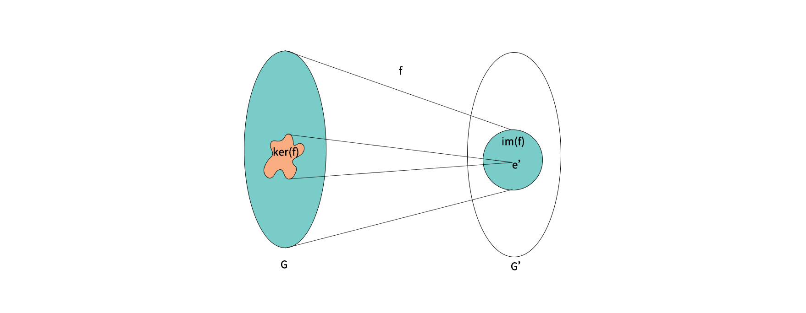
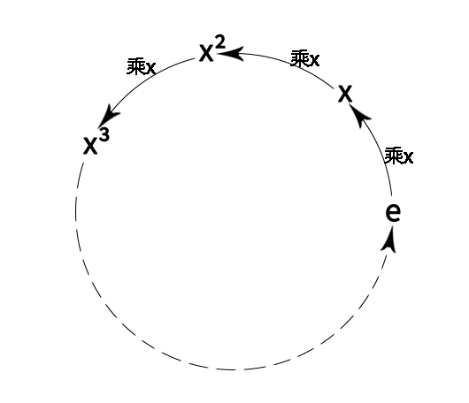
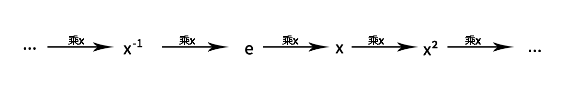
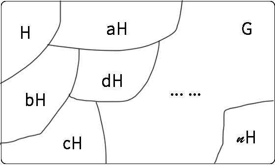
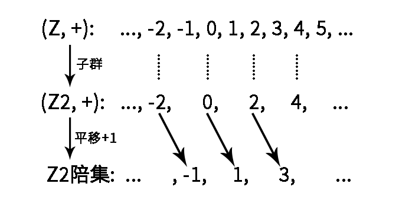

S是一个集合, *是一个运算, (S, *)表示由一个集合和这个集合上的运算构成的"结构".
- 当运算*在集合S中是封闭的, 那么称这个运算为二元运算
- (S,∗) 为幺半群 <==> 二元运算 + 结合律 + 单位元
- ∀x,y,z∈S,x∗(y∗z)=(x∗y)∗z
- ∃e∈S,∀x∈S,e∗x=x∗e=x
- (S,∗) 作为幺半群, 如果满足交换律, 则称为交换幺半群
- 若 (S,⋅) 是幺半群, 则单位元是唯一的.
- 广义结合律: x1⋅x2⋯xn=(x1⋅x2⋯xn−1)⋅xn
- x1⋅x2⋯xn⋅y1⋅y2⋯yn=(x1⋅x2⋯xn)⋅(y1⋅y2⋯yn)
- 对于 (S,⋅), x∈S,m,n∈N, 有 xm+n=xm⋅xn
- 令 (S,⋅) 是一个幺半群, 若 T⊂S. 称 (T,⋅) 为 (S,⋅) 的子幺半群, 当且仅当满足以下条件:
- e∈T
- ∀x,y∈T,x⋅y∈T
- 假设有两个幺半群: (S,⋅),(T,∗), 且 f:S→T 是一个映射, 我们称 f 是一个幺半群同态, 当且仅当满足:
- ∀x,y∈S,f(x⋅y)=f(x)∗f(y)
- f(e)=e′, 其中 e 是 S 的单位元, e′ 是T的单位元
- 假设 (S,⋅) 是幺半群, A⊂S 是一个子集. 定义由A生成的子幺半群, 记作 ⟨A⟩, 是指S中所有包含了A的子幺半群的交集. 表示为: ⟨A⟩=⋂{T⊂S:T⊃A,T is submonoid}
- ⟨A⟩ 是包含了A的最小子幺半群
- 假设 (S,⋅), (T,∗) 是两个幺半群, 且 f:S→T 是一个映射, 我们称为幺半群同构, 当且仅当:
- f 是一个双射
- ∀x,y∈S,f(x⋅y)=f(x)∗f(y)
- f(e)=e′, 其中 e 是 S 的单位元, e′ 是T的单位元
- 若 f:(S,⋅)→(T,∗) 是幺半群同构, 则 f−1:T→S 是有一个幺半群同态, 则 f−1 是幺半群同构
同构是一个等价关系.
什么是等价关系? 满足: 1. 反身性; 2. 对称性; 3. 传递性;
其他的等价关系还有: 相等, 全等, 相似等.
- 逆元: 令 (S,⋅) 是一个幺半群, x∈S, 我们称x是可逆的, 当且仅当: ∃y∈S,x⋅y=y⋅x=e, 其中 y 被称为 x 的逆元, 记作 x−1
- (S,⋅) 是幺半群, 若 x∈S 存在逆元, 则其逆元唯一.
- 群: 幺半群 (G,⋅) 如果所有元素都是可逆的, 则称为一个群.
- (G,⋅) 是一个群, 当且仅当:
- ⋅ 是二元运算
- ∀x,y,z∈G,x⋅(y⋅z)=(x⋅y)⋅z
- ∃e∈G,∀x∈G,x⋅e=e⋅x=x
- ∀x∈G,∃y∈G,x⋅y=y⋅x=e
- (G,⋅) 是群, 令 x∈G, 则 (x−1)−1=x
- (G,⋅) 是群, 令 x,y∈G, 则 (x⋅y)−1=y−1⋅x−1
- 若 (G,⋅) 是一个群, 当满足交换律时, 称它为阿贝尔群或交换群
- 令 (S,⋅) 是一个幺半群, 令 G 是所有可逆元素构成的子集, 则 (G,⋅) 是群
- n阶一般线性群: 所有 n∗n 可逆实矩阵构成的乘法群, 称为(实数上的)一般线性群, 记作: (GL(n,R),⋅), 其中集合表示为: GL(n,R)={A∈M(n,R):det(A)=0}
- n阶特殊线性群: 行列式为1的 n∗n 可逆实矩阵构成的乘法群, 称为(实数上的)特殊线性群, 记作: (SL(n,R),⋅), 其中集合表示为: SL(n,R)={A∈M(n,R):det(A)=1}
- 令 (G,⋅) 是一个群, 且 H⊂G. 称H是G的子群, 记作 H<G, 当且仅当:
- e∈H
- ∀x,y∈H,x⋅y∈H
- ∀x∈H,x−1∈H
- 上面子群的判定条件可以简化为:
- e∈H
- ∀x,y∈H,x⋅y−1∈H
- 令 (G,⋅),(G′,∗) 是群, 且 f:G→G′ 是一个映射. 我们称 f 是一个群同态, 当且仅当 ∀x,y∈G,f(x⋅y)=f(x)∗f(y)
- 与幺半群同态不一样, 幺半群同态还需要满足单位元映射之后还是单位元. 而群同态自然就满足了这个要求.
- 若 f:(G,⋅)→(G′,∗) 是一个群同态, 则 f(e)=e′,f(x−1)=f(x)−1
- det:GL(n,R)→(R×,⋅) 是一个乘法群同态
- 令 f:(G,⋅)→(G′,∗) 是一个群同态, 则定义 f 的核与像, 记作 ker(f),im(f), 分别为:
- ker(f)={x∈G:f(x)=e′}⊂G
- im(f)={y∈G′:∃x∈G,y=f(x)}={f(x):x∈G}⊂G′

- 令 f:(G,⋅)→(G′,∗) 是一个群同态, 则核是定义域的子群, 像是陪域的子群, 即: ker(f)<G,im(f)<G′
- 令 f:(G,⋅)→(G′,∗) 是一个群同态, 我们称 f 是一个满同态当 f 是满的, 称 f 是一个单同态当 f 是单的.
- 令 f:(G,⋅)→(G′,∗) 是一个群同态, 则 f 是一个单同态当且仅当 ker(f)={e}
- 令 f:(G,⋅)→(G′,∗) 是一个映射, 我们称 f 是一个群同构, 当 f 即是一个双射, 又是一个群同态. 简单来说, 同构就是双射的同态.
- 若 f:(G,⋅)→(G′,∗) 是一个群同构, 则 f−1 也是群同构.
- A,B 是两个集合, 则称 A×B={(a,b)∣a∈A,b∈B} 为集合A与B的直积
- 令 (G,⋅1),(G′,⋅2) 是两个群, 则这两个群的直积记为: (G×G′,∗). 具体的, 对于 (x,y),(x′,y′)∈G×G′, 其群的直积为 (x,y)∗(x′,y′)=(x⋅1x′,y⋅2y′)
- 若 (G,⋅1),(G′,⋅2) 是两个群, 则它们的直积 (G×G′,∗) 也是群.
- 如果群 (G,⋅) 中元素个数是有限的, 称为有限群
- 若 x∈G, 则 x (在G中)的阶, 记作 ∣x∣. 定义为: 最小的正整数 n∈N∗, 使得 xn=e. 若这样的 n 不存在, 则记 ∣x∣=∞
- 若 (G,⋅) 是有限群, 且 x∈G, 则 ∣x∣<∞. 换言之, 有限群的每一个元素通过自乘有限多次, 都可以得到单位元.
- 令 (G,⋅) 是一个群, 且 x∈G. 若 n∈N∗, 我们定义 x−n=(x−1)n, 另外 x0=e
- 令 (G,⋅) 是一个群, 任取 a∈G. 则 f:(Z,+)→(G,⋅), 定义为 f(x)=ax, 则 f 是一个群同态.
- 令 (G,⋅) 是一个群, 且 x∈G. 令 m,n∈Z, 则 xmn=(xm)n
- 令 (G,⋅) 是一个群, 且 x∈G, 则 ⟨x⟩ 被称为由 x 生成的群, 定义为: ⟨x⟩={xn:n∈Z}
- 令 (G,⋅) 是一个群, 且 S⊂G. 则由 S 生成的群, 记作: ⟨S⟩, 定义为: ⟨S⟩=⋂{H⊂G:H⊃S,H<G}
- 令 (G,⋅) 是一个群, 若 ∃x∈G, 使得 G=⟨x⟩, 则G被称为一个循环群, 而 x 被称为 G 的一个生成元.
有限循环群:

无限循环群:

- 令 G=⟨x⟩ 是有限循环群, 假设 ∣x∣=n (x的阶), 则 G={e,x,x2,⋯,xn−1}, 其中枚举法中的这些元素是两两不同的. 我们称这样的有限循环群的阶是 n.
- 对于任意 n∈N∗, 所有n阶循环群都是相互同构的.
- 令 G=⟨x⟩ 是无限循环群, 则 xn(n∈Z) 是两两不同的, 且 G 只有两个生成元, 分别是 x,x−1
- 所有无限循环群是彼此同构的.
- 令 G=⟨x⟩ 是一个n阶循环群. 假设 1≤m≤n, 则 xm 的阶为: ∣xm∣=gcd(n,m)n
- 令 G=⟨x⟩ 是一个n阶循环群, 则 xm(1≤m≤n) 是个生成元, 当且仅当 gcd(m,n)=1. 根据欧拉 ϕ 函数的定义, 这些生成元的个数正是 ϕ(n)
欧拉 ϕ 函数是小于 n 的正整数中与 n 互质(最大公约数为1)的数的个数
- 令 H 是 G 的子群, 则 H 的阶, 记作 ∣H∣, 定义为 H 的集合大小. 若 H 是无限群则记为 ∣H∣=∞
- 若 H 是 G 的子群, 则 H 的阶整除 G 的阶, 即: ∣H∣∣∣G∣
- 令 G 是一个群, H<G 是一个子群, a∈G. 则 aH 是 H 的一个左陪集(由 a 引出), 定义为: aH={ax:x∈H}
- 令 G 是一个有限群, H<G 是一个子群, a∈G. 我们通过左乘 a 来定义 f:H→aH, 即: f(x)=ax, 则 f 是一个双射. 特别地, ∣H∣=∣aH∣
- 令 G 是一个有限群, H<G 是一个子群, a,b∈G. 则左陪集 aH 和 bH 要么相等, 要么无交. 也就是说, 我们有 aH=bH, 或 aH∩bH=∅
所有陪集对G构成一个分拆, 每个陪集可以视作子群元素通过运算"平移"生成的:


- 令 G 是一个有限群, H<G 是一个子群. 则商集 G/H 定义为: G/H={aH:a∈G}. 我们把这个商集的大小称为 H 在 G 中的指数, 记为 [G:H], 即: [G:H]=∣G/H∣
- 拉格朗日定理: 令 G 是一个有限群, H<G 是一个子群, 则 ∣G∣=[G:H]∣H∣. 显然的 H 的阶整除 G 的阶.
- 令 G 是一个有限群, H<G 是一个子群, x∈G, 则我们有充要条件: xH=H⇔x∈H
- 令 G 是一个有限群, H<G 是一个子群, x,y∈G, 则我们有充要条件: xH=yH⇔y−1x∈H
- 令 K<H<G是三个有限群, 则: [G:K]=[G:H][H:K]
- 令 (G,⋅) 是一个群. 若 H,K<G 是两个有限子群, 则: ∣HK∣=∣H∩K∣∣H∣∣K∣
- 注: HK={hk:h∈H,k∈K}
上面我们知道了商集 G/H, 要是 G/H 能是一个群就更好了, 为此有了下面的内容.
- 令 (G,⋅) 是一个群, 且 N⊂G. 我们称 N 是个正规子群, 记作 N⊲G, 当且仅当:
- N 是个子群
- ∀a∈G,aN=Na
注: 上面描述的∀a∈G,aN=Na 可能是 ∀a∈G,n1,n2∈N,n1=n2,an1=n2a
- 令 (G,⋅) 是一个群, 且 N⊲G,a,b∈G, 则: (aN)⋅(bN)=(ab)N
- 令 (G,⋅) 是一个群, 且 N⊲G, 则 (G/N,⋅) 构成一个群, 称为(G在N上的)商群, 其中的单位元是 eN=N, 每个陪集 aN 的逆元是 a−1N
- 令 (G,⋅) 是一个群, 且 N<G, 则下列命题等价:
- N 是 G 的正规子群, 即 ∀a∈G,aN=Na
- ∀a∈G,aNa−1⊂N
- ∀a∈G,∀n∈N,ana−1∈N
- 令 (Ni)i∈I 是一族 G 的正规子群, 则它们的交集仍然是 G 的正规子群, 即: i∈I⋂Ni⊲G
- 令 (G,⋅) 是一个群, 则: {e}⊲G,G⊲G
- 令 (G,⋅) 是一个阿贝尔群, 则: H<G⟺H⊲G
- 群同构第一定理: 令 f:G→G′ 是一个群同态, 则 ker(f)⊲G, 且 G/ker(f)≃im(f).
- 若 f 是一个满同态, 则 G/ker(f)≃G′
- 若 f 是一个单同态, 则 G/e≃G≃im(f)
- 若 G 是有限群, 则 ∣ker(f)∣∣G∣=∣im(f)∣
- 群同构第二定理: 令 (G,⋅) 是一个群, 且 N⊲G,H<G. 则 H∩N⊲H,N⊲HN, 且 H/(H∩N)≃HN/N
- 群同构第三定理: 令 (G,⋅) 是一个群, 且 N⊲G,M⊲G,M<N. 则 N/M⊲G/M, 且 (G/M)/(N/M)≃G/N
- 令 S 是一个集合, 则 S 上的置换群(或对称群), 记作 (Perm(S),∘), 由所有 S 到自身的双射构成, 而这里的运算是映射的复合运算. Perm(S)={f:S↔S}
- 令 (G,⋅) 是一个群, S 是一个集合, 而 ϕ:G→Perm(S). 若 ϕ 是一个群同态, 则我们说 ϕ 是 G 在(集合) S 上的群作用
- 令 (G,⋅) 是一个群, 我们对 x∈G, 定义 ϕx∈Perm(G), 对 y∈G, 定义为 ϕx(y)=xyx−1. 则 ϕ:G→Perm(G), 对 x∈G, 定义 ϕ(x)=ϕx, 被称为 G 的共轭作用.
- 令 (G,⋅) 是一个群, 则 G 的共轭作用是 G 在自身的一个群作用
- 令 (G,⋅) 是一个群, x∈G, 则 ϕx:G→G, 对 y∈G, 定义为: ϕx(y)=xyx−1 是一个群 G 的自同构(即到自身的同构)
- 令 (G,⋅) 是一个群, 则一个 G 的(有 x∈G 引出的)内自同构, 指的是 ϕx:G→G, 对 y∈G, 定义为: ϕx(y)=xyx−1, 而其他所有 G 上的自同构, 则称为 G 上的外自同构
- 令 ϕ:(G,⋅)→(Perm(S),∘) 是一个 G 在 S 的群作用, 假如我们用 x⋅s, 甚至 xs, 来代表 ϕx(s), 或 ϕ(x,s), (其中 x∈G,s∈S), 则我们等价地, 可以把群作用的性质, 记作:
- ∀s∈S,e⋅s=s
- ∀x,y∈G,x⋅(y⋅s)=(x⋅y)⋅s
- 或者进一步地, 在不会引起歧义的情况下, 记作:
- ∀x∈S,es=s
- ∀x,y∈G,x(ys)=(xy)s
- 令 ϕ:(G,⋅)→(Perm(S),∘) 是一个 G 在 S 的群作用. 若 s∈S. 则我们定义 s 的轨道, 记作 Orb(s), 定义为: Orb(s)={s′∈S:∃x∈G,s′=xs}={xs:x∈G}. 我们定义 s 的稳定化子, 记作 Stab(s), 定义为: Stab(s)={x∈G:xs=s}
- 令 ϕ:(G,⋅)→(Perm(S),∘) 是一个 G 在 S 的群作用, 而 s,s′∈S, 则 Orb(s) 与 Orb(s′) 要么相等, 要么无交. 因此, S 可以写成轨道的无交并.
- 令 ϕ:(G,⋅)→(Perm(S),∘) 是一个 G 在 S 的群作用, 而 s∈S, 则 s 的稳定化子是 G 的子群, 即: Stab(s)<G
- 令 ϕ:(G,⋅)→(Perm(S),∘) 是一个 G 在 S 的群作用, 而 s∈S,x,y∈G, 则 xs=ys 当且仅当 x−1y∈Stab(s)
- 轨道-稳定化子定理: 令 ϕ:(G,⋅)→(Perm(S),∘) 是一个 G 在 S 的群作用, s∈S, 则存在 G/Stab(s) 到 Orb(s) 的双射. 特别地, 若 G 是有限群, 则: ∣G∣=∣Stab(s)∣⋅∣Orb(s)∣
有时, 我们不知道一个有限群 G 的大小, 但知道它作用在集合 S 上, 那我们就可以利用轨道-稳定化子定理, 找到某个点 s∈S 的轨道和稳定化子, 进而算出 G 的阶.
- 正 n 边形到自身的对称变换所构成的群称为正二面体群, 记作: D2n, 则有: ∣D2n∣=2n
- 令 n∈Z∖{0}, 而 m∈Z, 我们说 n 整除 m, 记作 n∣m, 若: m∈nZ={kn:k∈Z}
- 若 n∈Z, 则 nZ⊲Z
- 令 n∈N∗, 而 a,b∈Z. 我们说 a 同余 b (模 n), 记作: a≡b mod n, 若: a+nZ=b+nZ 或 a−b∈nZ
- 令 n∈N∗, 则 Zn 定义为: Zn=Z/nZ, Zn 中的每个元素被称为一个模 n 的同余类, 这些同余类可以枚举: Zn={k+nZ:0≤k≤n−1}
- 令 n∈N∗, 则 Zn 是个 n 阶循环群
- (Zn,⋅)是个幺半群
- 令 n∈N∗, 则 Zn×, 定义为由 (Zn,⋅) 中所有可逆元素构成的群, 即: Zn×={k+nZ:0≤k≤n−1,∃l∈Z,kl≡1 mod n}
- 裴蜀定理: 若 a,b,c∈N∗, 则 ax+by=c 有整数解 x,y 当且仅当 gcd(a,b)∣c. 特别地, 对于任意 a,b∈N∗, 我们可以找到 x,y∈Z, 使得 gcd(a,b)=ax+by
- 令 n∈N∗, 则 Zn×={k+nZ:1≤k≤n−1,gcd(a,n)=1}, 因此 ∣Zn×∣=ϕ(n). 特别地, 若 p 是一个素数, 则 Zp×={1+pZ,2+pZ,⋯,(p−1)+pZ}, 因此 ∣Zn×∣=p−1
- 令 (G,⋅) 是个有限群, 则对任意 a∈G,a∣G∣=e
- 费马小定理: 令 p 是一个素数, 而 p∤a, 则: ap−1≡a mod p, 同时左乘 a, 也可以得到 ap≡a mod p
- 欧拉定理: 令 n∈N∗, 而 gcd(a,n)=1, 则 aϕ(n)≡1 mod n
- 威尔逊定理: 若 p 是一个奇素数(即除了2以外的素数), 则 (p−1)!≡−1 mod p, 其中 ! 表示阶乘
环有两种不同的定义, 一种是有乘法单位元的, 一种是没有乘法单位元的, 这里使用的是有乘法单位元的定义.
- (R,+,⋅) 是一个环, 当 (R,+) 是阿贝尔群, (R,⋅) 是幺半群, 且乘法对加法有左右分配律. 即:
- ∀a,b,c∈R,a(b+c)=ab+ac
- ∀a,b,c∈R,(a+b)c=ac+bc
一般情况下, 我们用 + 表示环中的加法, 用 ⋅ 表示环中的乘法, 用0表示环的加法单位元, 用1表示环的乘法单位元
- (R,+,⋅) 是环, 当乘法有交换律时, (R,+,⋅) 是一个交换环, 即 ∀a,b∈R,ab=ba
- (R,+,⋅) 是环, a,b,c∈R, 则:
- a0=0a=0 (加法单位元乘任何元素结果都是加法单位元)
- a(−b)=(−a)b=−(ab)
- (−a)(−b)=ab
- (R,+,⋅) 是环, 则 R=0 当且仅当 0=1
- 令 (R,+,⋅) 是一个环, 则 (R×,⋅), 是由 R 中所有乘法可逆元素构成的群. R 中的乘法可逆元素又被称为 R 中的单位
- 令 (R,+,⋅) 是一个环, 我们称 (R,+,⋅) 是除环, 若: R∖{0}=R×, 也即, 所有非零元素都是单位.
- 令 (R,+,⋅) 是一个环, 我们称 (R,+,⋅) 是一个域, 若它是一个交换的除环
- (R,+,⋅) 是一个域, 当且仅当:
- (R,+) 是一个阿贝尔群
- (R∖{0},+) 是一个阿贝尔群
- 乘法对加法有分配率
- 令 (R,+,⋅) 是一个环, 而 S⊂R, 我们说 S 是 R 的子环, 记作 S<R, 若:
- 0,1∈S
- ∀a,b∈S,a+b∈S
- ∀a∈S,−a∈S
- 令 (R,+,⋅) 是一个环, 而 S⊂R, 则 S<R 当且仅当:
- 1∈S
- ∀a,b∈S,a−b,ab∈S
- 令 (R,+,⋅) 是一个环, 而 A⊂R, 则 A 生成的子环, 记作 ⟨A⟩, 定义为所有包含了A的子环的交集, 即: ⟨A⟩=⋂{S⊂R:S⊃A,S<R}
- 令 (R,+,⋅) 是一个环, 而 A⊂R, 则 ⟨A⟩<R
- 令 (Ri,+i,⋅i)i∈I 是一族环. 我们定义它们的直接, 为 (∏i∈IRi,+,⋅). 对于 (xi)i∈I,(yi)i∈I∈∏i∈IRi, 我们定义:
- (xi)i∈I+(yi)i∈I=(xi+iyi)i∈I
- (xi)i∈I⋅(yi)i∈I=(xi⋅iyi)i∈I
- 令 (Ri,+i,⋅i)i∈I 是一族环, 则它们的直积 (∏i∈IRi,+,⋅) 还是一个环